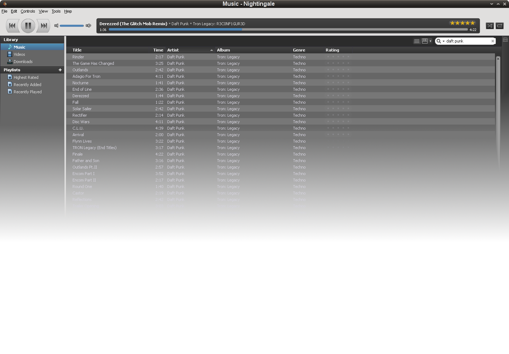

hover me!
Nightingale has been released!
A powerful & good looking media player. Some more text could go here.- Addons to provide the one feature you are missing in Nightingale. Show Addons >
- Last.fm rocks, because it's last.fm. And it has Audioscrobblerz
- It's built to use the system wide gstreamer (Linux only).
Choose the button for your operating system (you disabled javascript).
other OS